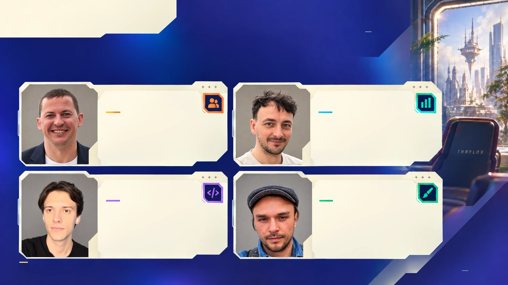

The people
building BOG.
A compact team working across game design, engineering, art and sound—and building the tools that bring those disciplines together.
The tools are part of the production.
Pavel works on the figures and interface. Olga builds the backend and tooling that links game data with Unreal assets. Artem brings engineering and mobile scene technology into the same production process.
Alongside them, Vitali’s art direction, Anton’s environments and cinematics, and Deniel’s music and sound give BOG its character. Maksym leads product and game design; Konstantin handles the company’s operational foundations.
The crew.

Portrait unavailableMaksym Palko
Product strategy, game design, analytics and balance. Connects the game’s systems with the experience players have in each session.
Konstantin Palko
Finance, legal and company operations. Builds the organisational foundations that support BOG’s production.
Artem Chaika
Engineering, Unreal Engine and the team’s own mobile scene technology. Connects BOG’s systems with the environments players see.
Vitali Yaronski
Art direction across BOG. Shapes a consistent visual language for its figures, environments and presentation.
Olga “Olya” Taranova
Backend engineering and production tooling, including the connection between game data and Unreal assets.
Anton Petukh / Lumo
Environments, cinematics and animation. Builds the spaces, movement and visual moments that give BOG’s world its character.
Pavel Marchankau
BOG’s interface and collectible figures. Connects concept work with the production of 3D figures for the game.
Deniel Pavlovskiy
Original music and sound design for BOG. Creates the soundtrack and sound that belong to its world.